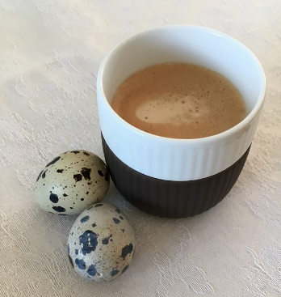

Kaffeguide
Espresso
En espresso er basen i en kop kaffe. Bestiller du en espresso, får du serveret et intens shot kaffe i en lille kop. En espresso er den mest intense kop kaffe du kan bestille.
Caffe Latte
En caffe latte er god til dig, som vil undgå den helt intense kaffesmag. Caffe latten består af et shot espresso og 2/3 varm mælk. Her får du en god mild kop kaffe.
Cappuccino
Cappuccinoen er mindre end caffe latten. Den brygges på et espresso shot, 1/3 mælkeskum og 1/3 dampet mælk.
Cortado
En cortado består af en del espresso og en del mælk. I en cortado tilsættes mælken først og dernæst espressoen, som dermed ligger sig ovenpå mælken. Dermed bliver espressoen liggende øverst i koppen. Med espressoen liggende i toppen, dannes der en mere intens smag af kaffe.
Macchiato
En macchiato er et espresso shot med mælkeskum øverst. Mælkeskummet sørger for at holde på varmen og kaffens aroma.
Americano
En americano består af dobbelt shot espresso og herefter tilføjes varmt vand. En americano er en slags forlænget udgave af den lille espresso, da du her får en større kop, hvor kaffen er blevet strukket ud i samgen.
Iskaffe
Der er intet bedre en kold kop iskaffe på en varm solskinsdag. Iskaffen består af en del stærk kaffe. Det kan være filterkaffe, espresso eller intens instant kaffe. Herefter tilføjes koldt mælk, evt. sukker og til sidst en god håndfuld isteringer. Hermed dannes der en god sød iskaffe.